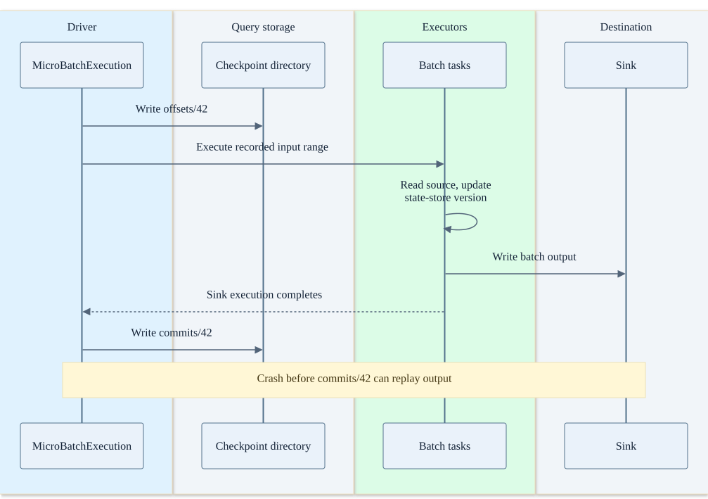

Chapter 11 · source-backed walkthrough
Spark: streaming batches and commit logs
Structured Streaming ordinarily turns an unbounded query into a sequence of bounded micro-batches. Each batch has a planned input range, state-store versions, sink work and a completed-batch record. The built-in Kafka sink still admits output duplicates after replay.
01
Driver logs define the ordinary micro-batch timeline
MicroBatchExecution discovers source end offsets and records them through markMicroBatchStart before a normal batch. runBatch constructs the input range into a query plan and invokes the sink. markMicroBatchEnd then records commit metadata and state-store checkpoint identifiers when enabled.
Restart compares the latest offset-log batch with the latest commit-log batch. An offset entry without the matching completion entry identifies work that may need to run again. The input range is replayable; this by itself does not make arbitrary output atomic.
The inspected HEAD also contains RealTimeTrigger paths which delay offset logging until batch end. This chapter deliberately diagrams the ordinary micro-batch branch. Do not apply its exact logging order to every newer execution mode or the separate continuous-processing engine.
Micro-batch 42 with Kafka input
Driver checkpoint logs and destination writes are distinct durable operations.

02
The built-in Kafka sink duplicate window
KafkaSink.addBatch calls KafkaWriter.write and then updates latestBatchId, a process-local variable. That variable suppresses repeated addBatch calls in the same instance. It is not a durable transaction coupling Kafka output to Spark checkpoint completion.
If a task or driver fails after some or all output records reach Kafka but before batch completion is durably recorded, re-execution can send the same logical results again. Producer idempotence can handle a producer retry; it does not deduplicate an independently replayed Spark batch across new attempts.
KafkaMicroBatchStream.commit(end) is empty in this source. Kafka source recovery is represented in the query checkpoint rather than a transactional group-offset commit made by that method. A downstream consumer can deduplicate using a stable business identity, or a different sink can implement batch-aware atomic commit. That behavior must be part of the destination contract.
One recorded range can produce twice
Both write attempts can be valid Kafka producer sessions. The missing Spark commit marker is what causes query replay.

03
State stores, legacy DStreams and execution tradeoffs
Stateful SQL operators restore versioned state according to the query checkpoint. The HDFS-backed provider and RocksDB-based providers offer different working-state and checkpoint implementations. State-store commit is not a global transaction with every possible sink.
Legacy Spark Streaming DStreams use JobGenerator to schedule time-indexed RDD jobs. DirectKafkaInputDStream creates RDDs for offset ranges. Receiver-based inputs additionally have receiver / block tracking and optional write-ahead-log paths. They should not be explained using Structured Streaming offset-log internals.
Micro-batching amortizes scheduling and sink commits across many records. A shorter trigger interval reduces idle wait at low load but can spend more time scheduling and committing. Once processing takes longer than the trigger interval, setting an even smaller trigger does not create capacity. Stateful joins, large shuffles and stragglers control the tail.
| Scenario | Recovery mechanism | External effect risk |
|---|---|---|
| Executor loses state cache | Reload durable state version and rerun task | Any side effect outside an attempt-safe sink may repeat. |
| Driver dies mid-batch | Restart query using same checkpoint; identify incomplete batch | Some output may already exist. |
| Kafka retention removes required input | Recorded range is no longer fully available | Replayability assumption fails; policy must explicitly handle missing data. |
| Checkpoint location changes | Different or empty progress history | Can initialize as a new query and repeat or skip data depending on source settings. |
| Use foreachBatch with batch ID dedupe | Destination tracks processed batch ID atomically with writes | Requires all relevant writes and dedupe record in the same destination transaction. |
Inside the implementation
These excerpts come directly from the code paths used above. Expand a component to move from the system view into its implementation.
spark-offset MicroBatchExecution.scala:1357
Ordinary micro-batches log end offsets before execution.
spark/sql/core/src/main/scala/org/apache/spark/sql/execution/streaming/runtime/MicroBatchExecution.scala · f9358a5587a2
1356 */
1357 protected def markMicroBatchStart(execCtx: MicroBatchExecutionContext): Unit = {
1358
1359 if (!trigger.isInstanceOf[RealTimeTrigger]) {
1360 if (!offsetLog.add(
1361 execCtx.batchId,
1362 execCtx.endOffsets.toOffsets(sources, sourceIdMap, execCtx.offsetSeqMetadata)
1363 )) {
1364 throw QueryExecutionErrors.concurrentStreamLogUpdate(execCtx.batchId)
1365 }
1366
1367 logInfo(
1368 log"Committed offsets for batch ${MDC(LogKeys.BATCH_ID, execCtx.batchId)}. " +
1369 log"Metadata ${MDC(LogKeys.OFFSET_SEQUENCE_METADATA, execCtx.offsetSeqMetadata.toString)}"
1370 )spark-end MicroBatchExecution.scala:1487
Completion metadata follows sink execution.
spark/sql/core/src/main/scala/org/apache/spark/sql/execution/streaming/runtime/MicroBatchExecution.scala · f9358a5587a2
1486 */
1487 protected def markMicroBatchEnd(execCtx: MicroBatchExecutionContext): Unit = {
1488 val latestExecPlan = execCtx.executionPlan.executedPlan
1489 watermarkTracker.updateWatermark(latestExecPlan)
1490 if (StatefulOperatorStateInfo.enableStateStoreCheckpointIds(
1491 sparkSessionForStream.sessionState.conf)) {
1492 updateStateStoreCkptId(execCtx, latestExecPlan)
1493 }
1494
1495 // In real-time mode, we delay the offset logging until the end of the batch.
1496 // We first gather the offsets processed up to from all RealTimeStreamScanExec,
1497 // i.e. tasks that execute a source partition. We merge the offsets and
1498 // write them to the offset log
1499 if (trigger.isInstanceOf[RealTimeTrigger]) {
1500 populateBatchOffsetsForRTM(execCtx)spark-state HDFSBackedStateStoreProvider.scala:226
State-store version commit is separate from arbitrary output effects.
spark/sql/core/src/main/scala/org/apache/spark/sql/execution/streaming/state/HDFSBackedStateStoreProvider.scala · f9358a5587a2
225 /** Commit all the updates that have been made to the store, and return the new version. */
226 override def commit(): Long = {
227 try {
228 verify(state == UPDATING, "Cannot commit after already committed or aborted")
229 commitUpdates(newVersion, mapToUpdate, compressedStream, shouldForceSnapshot)
230 state = COMMITTED
231 logInfo(log"Committed version ${MDC(LogKeys.COMMITTED_VERSION, newVersion)} " +
232 log"for ${MDC(LogKeys.STATE_STORE_PROVIDER, this)} to file " +
233 log"${MDC(LogKeys.FILE_NAME, finalDeltaFile)}")
234
235 // Report the commit to StateStoreCoordinator for tracking
236 if (storeConf.commitValidationEnabled) {
237 StateStore.reportCommitToCoordinator(newVersion, stateStoreId, hadoopConf)
238 }
239 spark-kafka KafkaSink.scala:34
Process-local latestBatchId guards repeated calls; it is not a durable Kafka transaction.
spark/connector/kafka-0-10-sql/src/main/scala/org/apache/spark/sql/kafka010/KafkaSink.scala · f9358a5587a2
33
34 override def addBatch(batchId: Long, data: DataFrame): Unit = {
35 if (batchId <= latestBatchId) {
36 logInfo(log"Skipping already committed batch ${MDC(BATCH_ID, batchId)}")
37 } else {
38 KafkaWriter.write(data.queryExecution,
39 executorKafkaParams, topic)
40 latestBatchId = batchId
41 }
42 }
43 }
44 Test source inspected or located, not executed: KafkaSinkSuite.scala
spark-dstream DirectKafkaInputDStream.scala:229
Legacy direct Kafka DStream creates RDDs from offset ranges.
spark/connector/kafka-0-10/src/main/scala/org/apache/spark/streaming/kafka010/DirectKafkaInputDStream.scala · f9358a5587a2
228
229 override def compute(validTime: Time): Option[KafkaRDD[K, V]] = {
230 val untilOffsets = clamp(latestOffsets())
231 val offsetRanges = untilOffsets.map { case (tp, uo) =>
232 val fo = currentOffsets(tp)
233 OffsetRange(tp.topic, tp.partition, fo, uo)
234 }
235 val useConsumerCache = context.conf.get(CONSUMER_CACHE_ENABLED)
236 val rdd = new KafkaRDD[K, V](context.sparkContext, executorKafkaParams, offsetRanges.toArray,
237 getPreferredHosts, useConsumerCache)
238
239 // Report the record number and metadata of this batch interval to InputInfoTracker.
240 val description = offsetRanges.filter { offsetRange =>
241 // Don't display empty ranges.
242 offsetRange.fromOffset != offsetRange.untilOffsetspark-kafka-source KafkaMicroBatchStream.scala:339
Source commit is empty here; the query checkpoint retains progress.
spark/connector/kafka-0-10-sql/src/main/scala/org/apache/spark/sql/kafka010/KafkaMicroBatchStream.scala · f9358a5587a2
338
339 override def commit(end: Offset): Unit = {}
340
341 override def stop(): Unit = {
342 kafkaOffsetReader.close()
343 }
344
345 override def toString(): String = s"KafkaV2[$kafkaOffsetReader]"
346
347 override def metrics(latestConsumedOffset: Optional[Offset]): ju.Map[String, String] = {
348 val reCalculatedLatestPartitionOffsets =
349 if (inRealTimeMode) {
350 if (!latestConsumedOffset.isPresent) {
351 // this means a batch has no end offsets, which should not happen
352 None